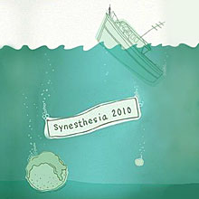

performance archiveSynesthesia 2010
“… strangely prophetic…” “Electric Pear Productions have taken
the game of telephone to a new level” |
In October 2009, a composer/ lyricist team was asked to select a fortune cookie. They created a piece based on the fortune. Two weeks later, they presented their work to the next artist in the series. This artist then had two weeks to create a piece based on the work shown to him (never having seen the fortune), and then presented his art to the next artist. She then created a piece…and then another artist, and then another artist… eventually, ten in all. From April 21st – May 1st 2010, the assembled works of all ten artists will be presented live, in-sequence, at the Wild Project in New York City’s East Village. Witness the next stage in the convergence of media. Now in its fourth season, Synesthesia is a live, annual event which unites a select and diverse range of arts and artists for eight days only. Synesthesia is an Electric Pear exclusive production, conceived by Ashlin Halfnight and Melanie Sylvan, and staged for the first time in 2007. This year’s show will offer up an evening of original music, theatre, art, film, dance…and surprises! For more information, please visit www.electricpear.org |
showtimes:
Final Show: tickets:Ticket sales is closed. |
Synesthesia 2010 artists:
|
SYNESTHESIA 2009 Lineup: |
upcoming performances |
|||
 |
|||
| EVQ Film Festival 2018 August 20-25 |
|||
performance archives |
|||
| 2018 | 2017 | 2016 | 2015 |
| 2014 | 2013 | 2012 | 2011 |
| 2010 | 2009 | 2008 | 2007 |